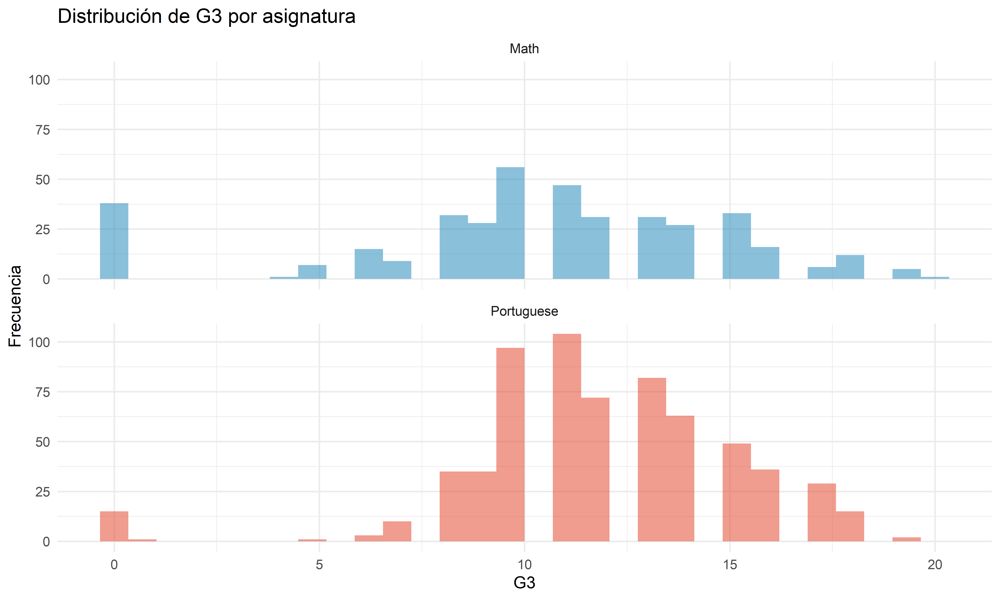

Chapter 2 Análisis Univariado: Rendimiento Académico (G3)
2.1 Estadísticas Descriptivas de G3
# Estadísticas descriptivas por materia
g3_stats <- df_all %>%
group_by(subject) %>%
summarise(
n = n(),
media = mean(g3),
desv_std = sd(g3),
mediana = median(g3),
q1 = quantile(g3, .25),
q3 = quantile(g3, .75),
minimo = min(g3),
maximo = max(g3),
.groups = "drop"
)
kable(g3_stats,
caption = "Estadísticas descriptivas de G3 por materia",
digits = 2,
col.names = c("Materia", "N", "Media", "Desv.Std", "Mediana", "Q1", "Q3", "Mín", "Máx"))| Materia | N | Media | Desv.Std | Mediana | Q1 | Q3 | Mín | Máx |
|---|---|---|---|---|---|---|---|---|
| Math | 395 | 10.42 | 4.58 | 11 | 8 | 14 | 0 | 20 |
| Portuguese | 649 | 11.91 | 3.23 | 12 | 10 | 14 | 0 | 19 |
2.1.1 Distribución de Calificaciones
# Comparación directa con boxplot
boxplot(mat$g3, por$g3,
names = c("Math", "Portuguese"),
main = "G3 — Comparación entre asignaturas",
col = c(pal["Math"], pal["Portuguese"]),
ylab = "Calificación Final (G3)")
Figure 2.1: Distribución de calificaciones finales (G3) por materia
# Histograma comparativo
p1 <- ggplot(df_all, aes(g3, fill = subject)) +
geom_histogram(bins = 30, position = "identity", alpha = .55) +
facet_wrap(~subject, ncol = 1) +
scale_fill_manual(values = pal) +
labs(title = "Distribución de G3 por asignatura", x = "G3", y = "Frecuencia") +
theme(legend.position = "none")
# Gráfico de densidad
p2 <- ggplot(df_all, aes(g3, color = subject)) +
geom_density(linewidth = 1.2) +
scale_color_manual(values = pal) +
labs(title = "Densidad de G3 por asignatura", x = "G3", y = "Densidad") +
theme(legend.position = "bottom")
print(p1)

Figure 2.2: Distribución de calificaciones finales (G3) por materia

Figure 2.3: Distribución de calificaciones finales (G3) por materia
Análisis del Rendimiento por Materia:
- Matemáticas: Media de 10.42 con desviación estándar de 4.58
- Portugués: Media de 11.91 con desviación estándar de 3.23
Deducción clave: Los estudiantes obtienen calificaciones significativamente más altas en Portugués que en Matemáticas, sugiriendo que Matemáticas presenta mayor dificultad académica o que los estudiantes tienen mejor dominio de su lengua materna.